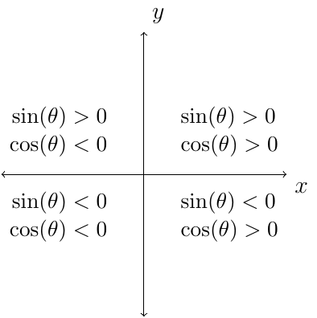

Section 1.4
Definition 3 (Identities)
Identities are equations that are true for all values of the variables for which all expression are defined.
Definition 4 (Reciprocal Identities)
For all angles \(\theta\) for which both functions are defined, the following hold true:
Remember in general \(f(5x)\ne 5f(x)\). This is also true for trig functions.
Similarly,
The signs for the sine and cosine function are as follows.

Let \(k\) be any integer.
Trig Function |
Domain |
Range |
|---|---|---|
\(\sin(\theta)\),\(\cos(\theta)\) |
\(\mathbb{R}\) |
\([-1,1]\) |
\(\tan(\theta)\) |
\(x\ne \frac{\pi}{2}+\pi k\) |
\(\mathbb{R}\) |
\(\cot(\theta)\) |
\(x\ne \pi + \pi k\) |
\(\mathbb{R}\) |
\(\sec(\theta)\) |
\(x\ne \frac{\pi}{2} + \pi k\) |
\((-\infty,-1]\cup[1,\infty)\) |
$\csc(\theta) |
\(x\ne \pi + \pi k\) |
\((-\infty,-1]\cup[1,\infty)\) |
Theorem 2 (Quotient Identities)
For all angles \(\theta\) for which the denominators are not zero, the follow are true.
Theorem 3 (Pythagorean Identities)
For all angles \(\theta\) for which the function values are defined, the following are true.